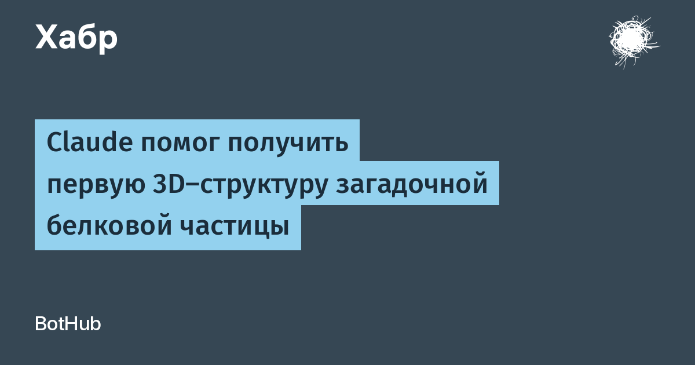

Vault-частицы — крупные полые белковые капсулы — биологи известны ещё с 1986 года, но их точная функция до сих пор не подтверждена: предполагается участие во внутриклеточном транспорте, защите и иммунных процессах. Команда Anthropic получила первую трёхмерную структуру такой частицы, найденной в прокариотических клетках: она состоит из 96 копий белка — по 48 в каждой половине, масса около 9,5 мегадальтона.
Сначала Claude проанализировал базу примерно из 15 млрд белковых последовательностей и помог найти родственников белков vault. Для экспериментов отобрали 44 варианта, а модель помогла подготовить ДНК-конструкции для их производства в бактериях. Выделение образцов для микроскопии заняло около 90 минут вместо традиционных трёх дней. Дальше Claude запускал специализированное ПО RELION для криоэлектронной микроскопии и помогал обрабатывать данные. По оценке Anthropic, первая 3D-модель была готова за 34 часа вместо нескольких недель, а весь исследовательский цикл — менее четырёх месяцев. Исследователи также создали 15 модифицированных вариантов белка: некоторые мешали частице закрываться, что позволило определить участки, нужные для формирования оболочки.
Anthropic честно описывает и провалы: одна неудачная рекомендация по лабораторному протоколу задержала эксперименты на две недели, а в другом случае модель пропустила стандартный этап обработки данных — на выходе получилась 3D-карта с зеркально отражённой структурой. Хороший пример того, как выглядит «ИИ-учёный» в реальной жизни: не магия, а ускоренная рутина с контролем человека на каждом критическом шаге.
Работа продолжает линию лаборатории Anthropic: в сентябре компания уже сообщала, что сотни агентов Claude искали в генетических базах новые системы редактирования генов. Структура загадочной частицы — не прорыв в медицине, а демонстрация нового формата науки: ИИ-агенты как полноценные участники цикла «гипотеза — конструкция — эксперимент — обработка». Результаты опубликованы в официальном исследовании Anthropic.